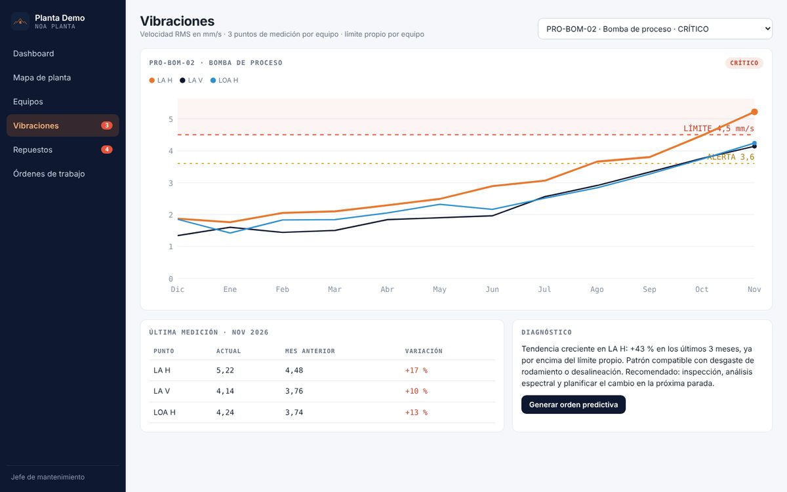
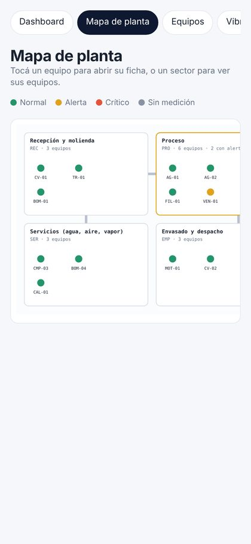
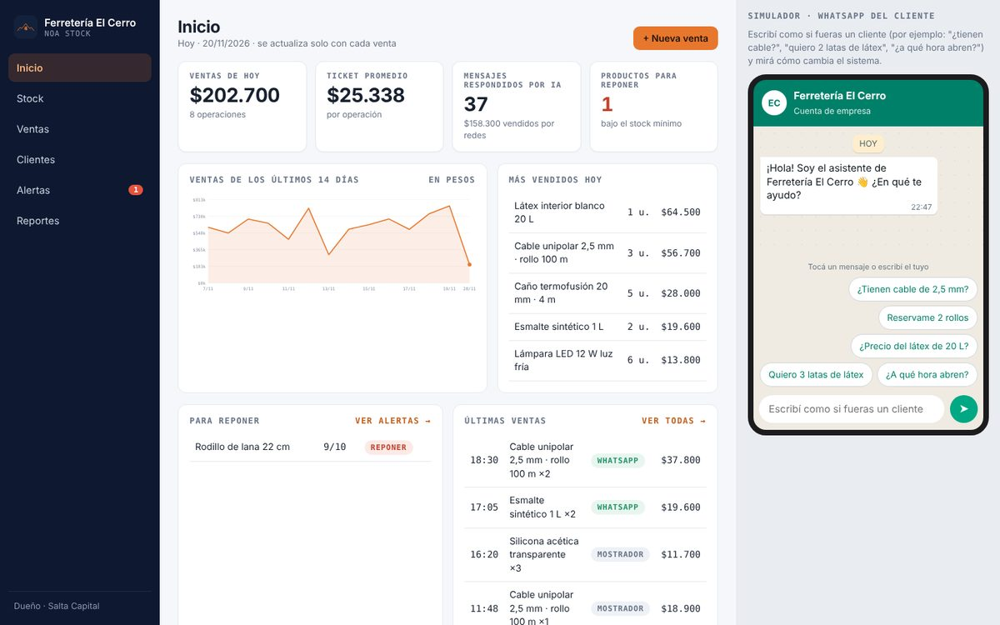

Presencia digital
Que te encuentren y te escriban.
- Página web con tu dominio
- Perfil de Google y Google Maps
- Catálogo online con pedido por WhatsApp
- Instagram y WhatsApp Business configurados
Salta · Jujuy · Tucumán
Productos propios y software a la medida para comercios, servicios e industrias del NOA.
Producto digital
Construimos productos propios a partir de problemas reales de negocios del norte. Cada uno sale a la calle cuando ya resolvió el problema en un negocio de verdad.
Nació del trabajo diario de mantenimiento en una planta industrial de la Puna.
WhatsApp con IA, stock y ventas conectados.
Turnos, recordatorios y clientes que vuelven.
Monitoreo con sensores de frío y energía para pymes.
Industria y mantenimiento
Plantas · frigoríficos · bodegas · contratistas


Demo con planta de ejemplo y datos ficticios. Se usa igual que el sistema real.
Comercios
Ferreterías · almacenes · distribuidoras · corralones

Demo de una ferretería de ejemplo. Escribile al WhatsApp simulado y mirá cómo cambia el stock.
Servicios
Talleres · consultorios · estudios · servicios técnicos
Servicios
Que te encuentren y te escriban.
Que tu negocio funcione solo donde puede.
Cómo trabajamos
Venimos de la industria. Antes de programar, entendemos cómo funciona tu negocio y medimos dónde se pierde tiempo o plata. El diagnóstico es sin cargo.
Soporte presencial en Salta y Jujuy. Remoto en Tucumán y el resto del país.
Contacto
Contanos cómo llevás tu negocio hoy. Te decimos, sin cargo, dónde podés ganar tiempo y plata.